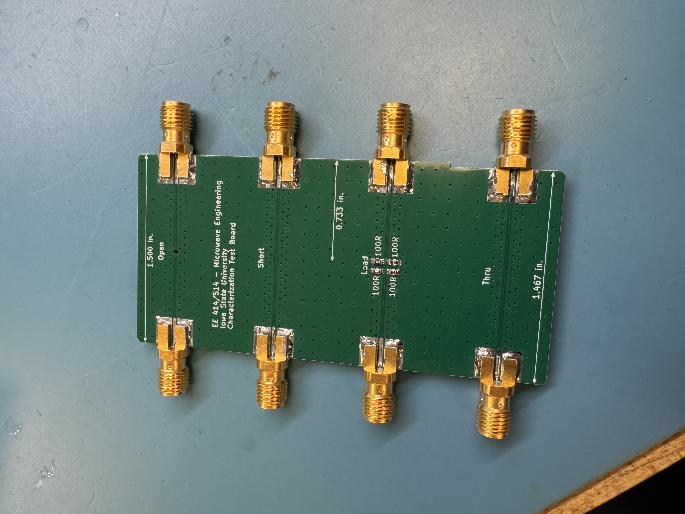
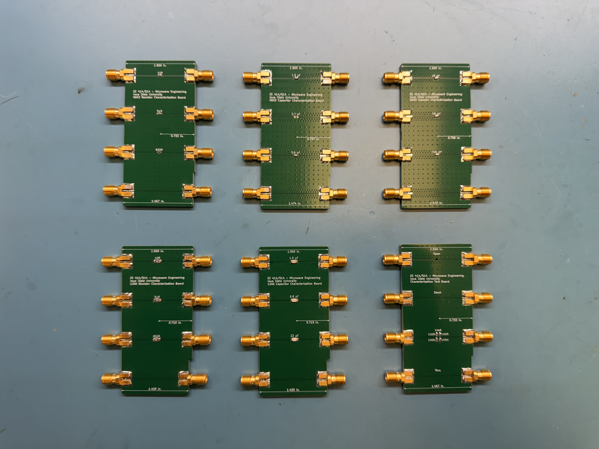

RF Characterization Board
EE 414/514 Microwave Engineering

This PCB will be used in the Microwave Engineering lab to measure the RF characteristics of different resistors, capacitors, and inductors. These are designed to operate up to 26 GHz, so the design and assembly required extreme attention to detail. At these frequencies, any faults would affect the accuracy of the measurements. The design process of this board taught me techniques such as impedance matching, careful component placement, and other high-frequency board layout considerations.
Additional Images


Acknowledgements
Prof. Nathan Neihart: Original board design
Aidan Preves: PCB layout